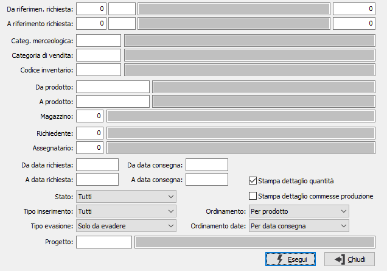

Situazione richieste di acquisto
La procedura fornisce un report a stampa con le informazioni relative alle richieste oggetto della selezione effettuata tramite i criteri presenti nella finestra.
Se attiva la gestione progetti è possibile specificare anche il progetto da analizzare.

DA RIFERIMENTO RICHIESTA: tre campi per contenere rispettivamente anno, causale e numero del documento da cui si vuole iniziare la selezione. Confermando a vuoto, la selezione inizia dal primo documento compatibile con i successivi parametri.
A RIFERIMENTO RICHIESTA: tre campi per contenere rispettivamente anno, causale e numero del documento con cui si vuole concludere la selezione. Confermando a vuoto, la selezione termina con l’ultimo documento compatibile con i successivi parametri.
CATEGORIA MERCEOLOGICA: indica il codice della categoria merceologica da utilizzare per la selezione delle richieste. Sul campo sono disponibili le funzioni di ricerca (F9) sulla tabella stessa.
CATEGORIA DI VENDITA: indica il codice della categoria di vendita da utilizzare per la selezione delle richieste. Sul campo sono disponibili le funzioni di ricerca (F9) sulla tabella stessa.
CODICE INVENTARIO: indica il codice inventario da utilizzare per la selezione delle richieste. Sul campo sono disponibili le funzioni di ricerca (F9) sulla tabella stessa.
DA PRODOTTO: eventuale codice dell'articolo, presente in anagrafica Prodotti, da cui si desidera iniziare la selezione di analisi. Confermando a vuoto, la selezione inizia con il primo prodotto valido. Sul campo sono attive le funzioni di ricerca (F9).
A PRODOTTO: eventuale codice dell'articolo, presente in anagrafica Prodotti, a cui si desidera terminare la selezione di analisi. Confermando a vuoto, la selezione termina con l’ultimo valido. Sul campo sono attive le funzioni di ricerca (F9).
MAGAZZINO: eventuale codice del magazzino a cui si vuole restringere la selezione di analisi. Sul campo è attiva la vista F9 sulla tabella Magazzini.
RICHIEDENTE: indica il codice dell'utente che ha presentato la richiesta da utilizzare per la selezione dei documenti. Sul campo sono disponibili le funzioni di ricerca (F9) sulla tabella stessa.
ASSEGNATARIO: indica il codice dell'utente che ha in carico la richiesta da utilizzare per la selezione dei documenti. Sul campo sono disponibili le funzioni di ricerca (F9) sulla tabella stessa.
DA DATA: eventuale data del documento da cui deve iniziare l’analisi dei documenti relativamente ai precedenti parametri di selezione. Confermando a vuoto, l’analisi inizia con il primo documento valido.
A DATA: eventuale data del documento con cui si desidera terminare l’analisi dei documenti relativamente ai precedenti parametri di selezione. Confermando a vuoto, l’analisi si conclude con l'ultimo documento valido.
DA CONSEGNA: indica la data di consegna con cui iniziare la selezione delle richieste per effettuare l'operazione selezionata. Confermando a vuoto, l’analisi inizia con il primo documento valido.
A CONSEGNA: indica la data di consegna con cui terminare la selezione delle richieste per effettuare l'operazione selezionata. Confermando a vuoto, l’analisi si conclude con l'ultimo documento valido.
STATO: definisce lo stato di avanzamento delle righe relative alle richieste da analizzare:
tutti;
in valutazione;
approvato;
accettato;
generata richiesta di offerta;
generato ordine fornitore;
ricevuta merce
respinto.
TIPO INSERIMENTO: definisce la tipologia di richieste da analizzare:
tutti;
inseriti manualmente;
da disposizioni di produzione;
da MRP;
da ordini clienti.
TIPO EVASIONE: definisce il tipo di evasione relativo alle richieste da analizzare: solo da evadere, solo evase oppure tutte le richieste.
CODICE PROGETTO: Codice alfanumerico di 15 caratteri che definisce il progetto per cui effettuare la selezione delle richieste di acquisto. Sul campo sono attive le funzioni di ricerca (F9). Il campo è presente solo se attiva la gestione progetti.
STAMPA DETTAGLIO QUANTITÀ: definisce se stampare il dettaglio quantità per i prodotti (casella con segno di spunta). L'opzione è valida solo se si gestisce il dettaglio delle quantità.
STAMPA DETTAGLIO COMMESSE PRODUZIONE: definisce se stampare il dettaglio delle commesse di produzione per i prodotti (casella con segno di spunta). L'opzione è valida solo se si gestisce il dettaglio delle commesse di produzione.
ORDINAMENTO: definisce il criterio di ordinamento in stampa:
per prodotto;
per categoria merceologica;
per richiedente;
per assegnatario.
ORDINAMENTO DATE: definisce il criterio di ordinamento per data in stampa: per data consegna, per data richiesta oppure nessuno.